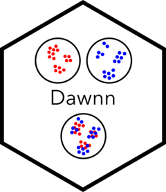
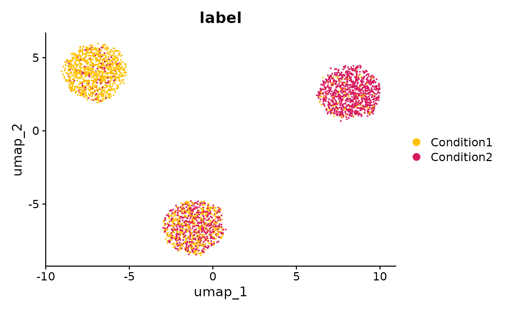
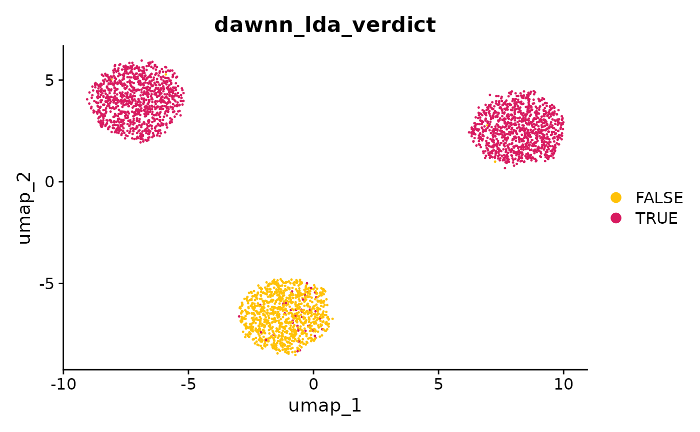
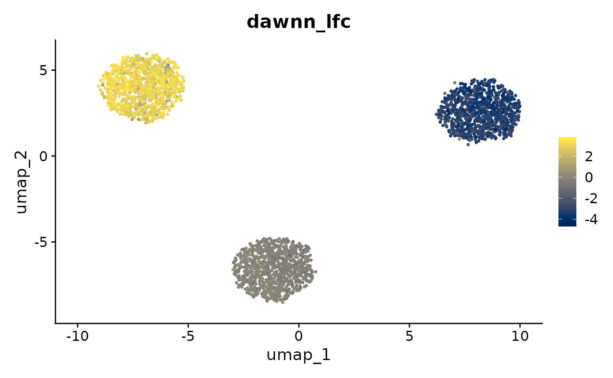
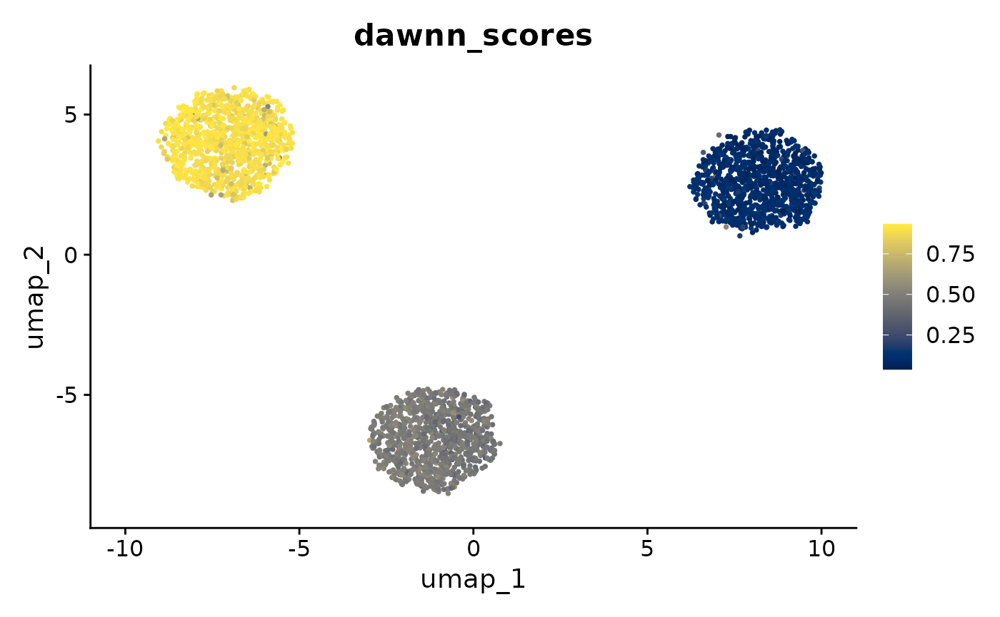
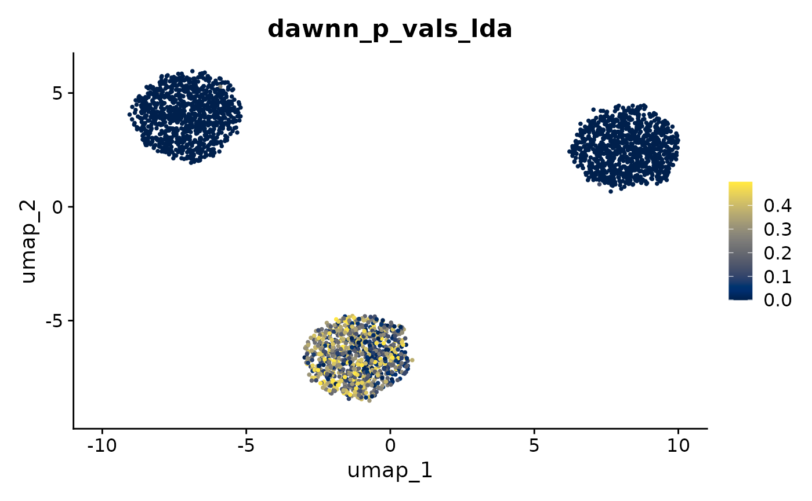

Dawnn vignette
George T. Hall and Sergi Castellano
Compiled on 22 July 2026
dawnn.RmdCopyright (C) 2023- University College London
Licensed under GNU GPL Version 3 https://www.gnu.org/licenses/gpl-3.0.html
We have simulated some toy data to demonstrate Dawnn. Click here to display the simulation code.
We need to first generate a dataset on which we can run Dawnn. We generate three clusters of cells. In one cluster, we aim to have a 50/50 split of the labels “Condition1” and “Condition2”; in the second, we aim for a 10/90 split; and in the third we aim for a 90/10 split. This means that there is differential abundance in the second and third clusters. We aim to detect this with Dawnn.
library(stats)
library(dplyr)
library(Seurat)
set.seed(123)
# Simulate three samples with the expression of 30 genes measured:
# - Sample 1 is upregulated in the first ten genes
# - Sample 2 is upregulated in the second ten genes
# - Sample 3 is upregulated in the third ten genes
sample_1 <- rnbinom(n = 30000, size = 1,
prob = c(rep(0.5, 0), rep(0.1, 10), rep(0.5, 20)))
sample_2 <- rnbinom(n = 30000, size = 1,
prob = c(rep(0.5, 10), rep(0.1, 10), rep(0.5, 10)))
sample_3 <- rnbinom(n = 30000, size = 1,
prob = c(rep(0.5, 20), rep(0.1, 10), rep(0.5, 0)))
ge_vect <- c(sample_1, sample_2, sample_3)
ge_matrix <- matrix(ge_vect, ncol = 3000)
colnames(ge_matrix) <- paste0("cell", 1:3000)
rownames(ge_matrix) <- paste0("gene", 1:30)
cells <- CreateSeuratObject(counts = ge_matrix) %>%
NormalizeData() %>%
FindVariableFeatures() %>%
ScaleData() %>%
RunPCA() %>%
RunUMAP(dims = 1:10)
cells$pc1 <- c(rep(0.1, 1000), rep(0.5, 1000), rep(0.9, 1000))
cells$label <- ifelse(runif(3000) <= cells$pc1, "Condition1", "Condition2")
DimPlot(cells, group.by = "label", pt.size = 0.1,
cols = c("#FFC107", "#D81B60"))
Installation
Installation instructions are given in the GitHub
README. In this vignette, we assume that Tensorflow is installed in
a conda environment called tf_env, which is not necessarily
the same environment that contains Dawnn. A docker image that will run
this vignette is available on DockerHub as
georgehallucl/dawnn_benchmarking.
Main workflow
Following installation of the Dawnn package, Dawnn model, and Tensorflow Python package, we are now ready to run the tool.
As in the GitHub README, we assume in the following simple example
that cells is a Seurat dataset with >1000 cells, a PCA
reduction, and a meta.data slot condition_name
that contains the name of the condition to which each cell belongs
(either Condition1 or Condition2). We wish to
associate the label Condition1 with positive log-fold
changes in the results (Condition2 will thus be associated
with negative).
cells <- run_dawnn(cells, label_names = "label", label_pos_lfc = "Condition1",
reduced_dim = "pca", tf_conda_env = "tf_env", verbosity = 0)Required parameters
run_dawnn has four required parameters:
| Parameter | Description |
|---|---|
cells |
Seurat object containing the dataset |
label_names |
meta.data slot in cells containing
labels |
label_pos_lfc |
The label corresponding to posiive log-fold change |
reduced_dim |
Dimensionality reduction to use when calculating KNN graph |
We outline the optional parameters later in this vignette.
Output
Dawnn’s outputs are stored in meta.data slots of
cells. These outputs are:
| Dawnn output | Description |
|---|---|
cells$dawnn_[lda/gda]_verdict |
Boolean output of Dawnn for whether a cell is in a region of [local/global] differential abundance. |
cells$dawnn_lfc |
Estimated log2-fold change in the cell’s neighbourhood. |
cells$dawnn_scores |
Estimated probability that the cell was drawn from the sample
associated with label_pos_lfc. |
cells$dawnn_p_vals_[lda/gda] |
P-value associated with the hypothesis test that it is in a region of [local/global] differential abundance. |
The first two outputs are likely the most useful.
dawnn_[lda/gda]_verdict tells us whether Dawnn has called a
cell as being in a region of [local/global] differential abundance and
dawnn_lfc contains the estimated log2-fold change in the
abundance of label_pos_lfc (relative to the other label) in
the neighbourhood of each cell. This second quantity is independent of
whether the user is searching for local or global DA.
Let’s first plot the labels of each cell to identify manually which cluster exhibit differential abundance.

From this, it appears that the cluster at the bottom of the UMAP has
a roughly even split of the two conditions, whilst the other two
clusters exhibit differential abundance towards one of them. We will see
whether Dawnn has detected this by colouring the UMAP according to
Dawnn’s verdict of local differential abundance
(dawnn_lda_verdict).

As expected, Dawnn detects that there is no differential abundance in the bottom cluster and that there is in the other two.
If we want to investigate the estimated log2-fold change in the
abundance of Condition1 compared to
Condition2, we can colour cells according to
dawnn_lfc.
FeaturePlot(cells, "dawnn_lfc") + viridis::scale_color_viridis(option = "cividis")
As expected, the two clusters identified as generally exhibiting local differential abundance have estimated log2-fold changes far from 0, whereas for the cluster at the bottom of the UMAP this quantity is close to 0.
dawnn_scores contains the direct output of Dawnn’s
neural network, i.e. the estimated probability a cell was drawn from the
sample associated with label_pos_lfc (in our case,
Condition1). dawnn_scores is converted into
dawnn_lfc with
log2(cells$dawnn_scores / (1 - cells$dawnn_scores)).
FeaturePlot(cells, "dawnn_scores") + viridis::scale_color_viridis(option = "cividis")
Finally, dawnn_p_vals_[lda|gda] contains, for each cell,
the p-value associated with testing the null hypothesis of “this cell is
not in a region of [local|global] differential abundance”. These
p-values are used to determine the calls made in
dawnn_[lda|gda]_verdict. We plot each cell’s p-value for
the test of whether it is in a region of local differential
abundance.
FeaturePlot(cells, "dawnn_p_vals_lda") + viridis::scale_color_viridis(option = "cividis")
Optional parameters
The main function run_dawnn has a number of optional
parameters:
| Parameter | Description |
|---|---|
nn_model |
String containing the path to the model’s .hdf5 file (default
~/.dawnn/dawnn_nn_model.h5). |
recalculate_graph |
Boolean whether to recalculate the KNN graph. If FALSE, then the one
stored in the ‘cells’ object will be used (default
TRUE). |
alpha |
Numeric target false discovery rate supplied to the Benjamini–Yekutieli procedure (default 0.1, i.e. 10%). |
verbosity |
Integer how much output to print. 0: silent; 1: normal output; 2:
display messages from predict() function. (default 2) |
seed |
Integer random seed (default 123). |
These options can be set as follow:
cells <- run_dawnn(cells, label_names = "labels", label_pos_lfc = "Condition1",
reduced_dim = "pca", tf_conda_env = "tf_env", n_dims = 20,
nn_model = "~/another_dawnn_model.h5",
recalculate_graph = FALSE, alpha = 0.05, verbosity = 0,
seed = 42)Changing model location
We can use download_model’s model_file_path
parameter to change the location to which the model is downloaded. This
non-default location must then be passed to run_dawnn using
the nn_model parameter.
download_model(..., model_file_path = "~/Documents/new_model_location.h5")
run_dawnn(..., nn_model = "~/Documents/new_model_location.h5")Downloading a model from another location
A neural network model for Dawnn can be downloaded from a non-default
url using the model_url parameter. This might be useful if
you have trained a model with a different K, for
instance
download_model(..., model_url = "example.com/another_model_url.h5")SessionInfo
Click to reveal output of sessionInfo()
sessionInfo()
#> R version 4.4.3 (2025-02-28)
#> Platform: aarch64-conda-linux-gnu
#> Running under: Debian GNU/Linux forky/sid
#>
#> Matrix products: default
#> BLAS/LAPACK: /root/miniconda3/envs/r_env/lib/libopenblasp-r0.3.30.so; LAPACK version 3.12.0
#>
#> locale:
#> [1] C
#>
#> time zone: Etc/UTC
#> tzcode source: system (glibc)
#>
#> attached base packages:
#> [1] stats graphics grDevices utils datasets methods base
#>
#> other attached packages:
#> [1] future_1.67.0 dawnn_2.0.0 Seurat_5.3.1 SeuratObject_5.2.0
#> [5] sp_2.2-0 dplyr_1.1.4
#>
#> loaded via a namespace (and not attached):
#> [1] RColorBrewer_1.1-3 jsonlite_2.0.0 magrittr_2.0.4
#> [4] spatstat.utils_3.2-0 farver_2.1.2 rmarkdown_2.30
#> [7] fs_1.6.6 ragg_1.5.0 vctrs_0.6.5
#> [10] ROCR_1.0-11 spatstat.explore_3.5-3 base64enc_0.1-3
#> [13] htmltools_0.5.8.1 sass_0.4.10 sctransform_0.4.2
#> [16] parallelly_1.45.1 KernSmooth_2.23-26 bslib_0.9.0
#> [19] htmlwidgets_1.6.4 desc_1.4.3 ica_1.0-3
#> [22] plyr_1.8.9 plotly_4.11.0 zoo_1.8-14
#> [25] cachem_1.1.0 whisker_0.4.1 igraph_2.1.4
#> [28] mime_0.13 lifecycle_1.0.4 pkgconfig_2.0.3
#> [31] Matrix_1.7-4 R6_2.6.1 fastmap_1.2.0
#> [34] fitdistrplus_1.2-4 shiny_1.11.1 digest_0.6.38
#> [37] patchwork_1.3.2 tensor_1.5.1 RSpectra_0.16-2
#> [40] irlba_2.3.5.1 textshaping_1.0.4 labeling_0.4.3
#> [43] progressr_0.18.0 tfruns_1.5.4 spatstat.sparse_3.1-0
#> [46] httr_1.4.7 polyclip_1.10-7 abind_1.4-8
#> [49] compiler_4.4.3 withr_3.0.2 S7_0.2.0
#> [52] viridis_0.6.5 fastDummies_1.7.5 tensorflow_2.20.0
#> [55] MASS_7.3-65 rappdirs_0.3.3 tools_4.4.3
#> [58] lmtest_0.9-40 otel_0.2.0 httpuv_1.6.16
#> [61] future.apply_1.20.0 goftest_1.2-3 glue_1.8.0
#> [64] nlme_3.1-168 promises_1.5.0 grid_4.4.3
#> [67] Rtsne_0.17 keras_2.16.0 cluster_2.1.8.1
#> [70] reshape2_1.4.5 generics_0.1.4 gtable_0.3.6
#> [73] spatstat.data_3.1-9 tidyr_1.3.1 data.table_1.17.8
#> [76] spatstat.geom_3.6-0 RcppAnnoy_0.0.22 ggrepel_0.9.6
#> [79] RANN_2.6.2 pillar_1.11.1 stringr_1.6.0
#> [82] spam_2.11-1 RcppHNSW_0.6.0 later_1.4.4
#> [85] splines_4.4.3 lattice_0.22-7 survival_3.8-3
#> [88] deldir_2.0-4 tidyselect_1.2.1 miniUI_0.1.2
#> [91] pbapply_1.7-4 knitr_1.50 gridExtra_2.3
#> [94] scattermore_1.2 xfun_0.54 matrixStats_1.5.0
#> [97] stringi_1.8.7 lazyeval_0.2.2 yaml_2.3.10
#> [100] evaluate_1.0.5 codetools_0.2-20 tibble_3.3.0
#> [103] cli_3.6.5 uwot_0.2.4 xtable_1.8-4
#> [106] reticulate_1.44.0 systemfonts_1.3.1 jquerylib_0.1.4
#> [109] Rcpp_1.1.0 globals_0.18.0 spatstat.random_3.4-2
#> [112] zeallot_0.2.0 png_0.1-8 spatstat.univar_3.1-4
#> [115] parallel_4.4.3 pkgdown_2.2.0 ggplot2_4.0.0
#> [118] dotCall64_1.2 listenv_0.10.0 viridisLite_0.4.2
#> [121] scales_1.4.0 ggridges_0.5.7 purrr_1.2.0
#> [124] rlang_1.1.6 cowplot_1.2.0